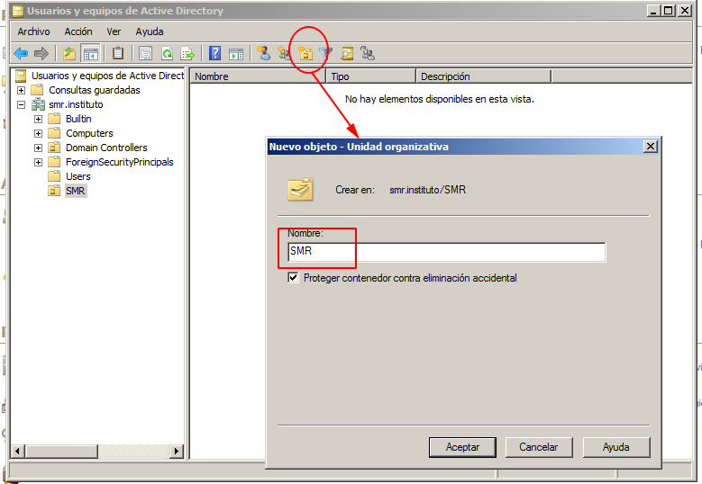
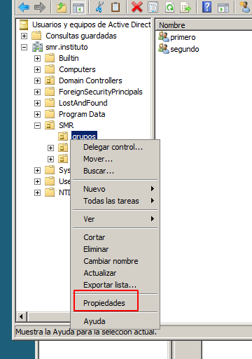
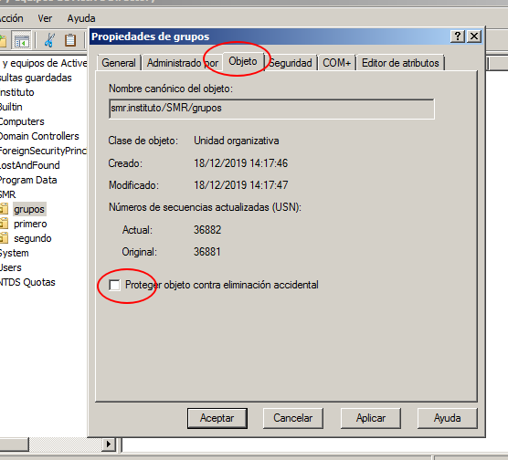
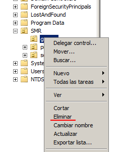

Las unidades organizativas ( OU ) son el mecanismo mas común de organización de Active Directory. Crearlas es tan sencillo como apretar un botón y tienen el aspecto de directorios. Para añadir un objeto a una unidad organizativa podemos arrastrarla desde el administrador dentro de la unidad. Igualmente podemos crear los objetos dentro de las OU.

Las unidades organizativas estan protegidas por defecto contra el borrado accidental, por lo que si queremoes borrarlas debemos primero activar
la propiedades avanzadas y después modificar esta caracteristica en la pestaña objeto.
Para activar las propiedades avanzadas hacemos como se muestra en la siguiente imagen:
Seguidamente podremos acceder a estas propiedades.
Y quitamos la protección en la pestaña objeto:
Con esto ya podemos eleminar sin problemas la OU.
